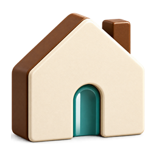
أهلاً، بنفس الروح المعتمدة.
86 أيقونة مخصصة للأقسام والتنقل والإجراءات، بالكريمي والبني ولمسات ذهبية وفيروزية ونيلية. الصور شفافة، والإطار الرمادي مستقل. صور «ماذا تحتاج في مصر؟» باقية دون تغيير.
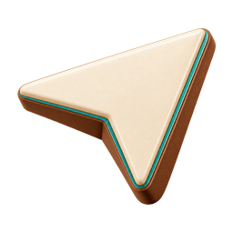
قريب منك
إضافة للمفضلة
عنصر محفوظ في المفضلة
32 · 24 · 20 px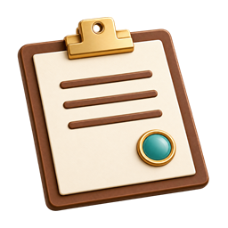
خطتي
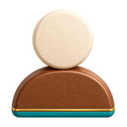
حسابي
البحث
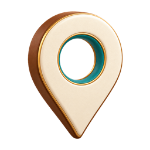
الموقع والمدينة
اختيار اللغة
مساعد أهلاً الذكي
الطوارئ
الانتقال والرجوع
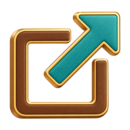
رابط خارجي
32 · 24 · 20 pxإغلاق
32 · 24 · 20 px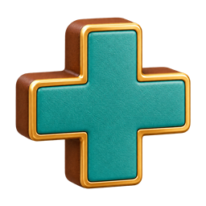
إضافة
32 · 24 · 20 px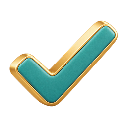
تأكيد
32 · 24 · 20 pxتقييم
32 · 24 · 20 pxمصر
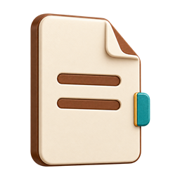
المستندات
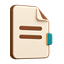
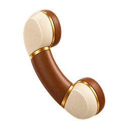
اتصال
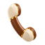
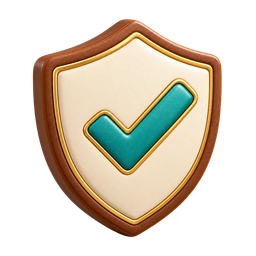
الثقة والأمان
32 · 24 · 20 pxالتذكيرات
32 · 24 · 20 px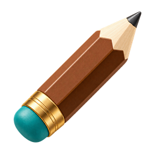
تعديل
32 · 24 · 20 px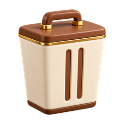
حذف
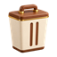
مساعدة شخصية
32 · 24 · 20 px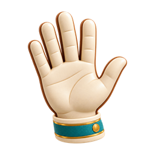
ترحيب
32 · 24 · 20 pxالإجراءات والتأشيرات
32 · 24 · 20 px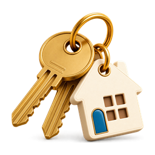
السكن
32 · 24 · 20 pxالدراسة والتعليم
32 · 24 · 20 px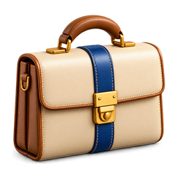
العمل
32 · 24 · 20 pxالصحة والعلاج
32 · 24 · 20 pxالمواصلات والتنقل
32 · 24 · 20 pxالخدمات اليومية
32 · 24 · 20 px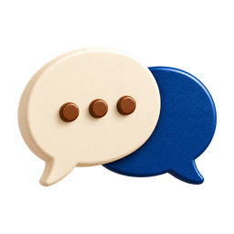
المجتمع والتواصل
32 · 24 · 20 px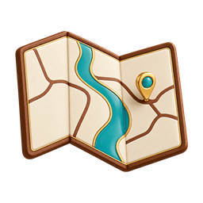
الخريطة والأماكن
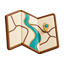
السياحة والتجارب
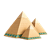
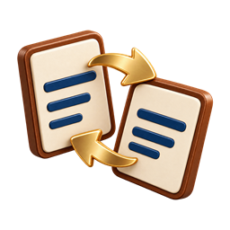
الترجمة واللغات
32 · 24 · 20 px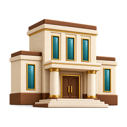
الجهات الحكومية والجوازات
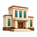
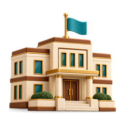
السفارات
32 · 24 · 20 px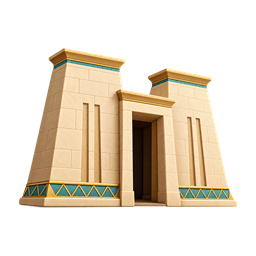
الجولات الأثرية
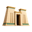
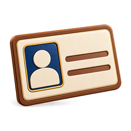
الأحوال المدنية
32 · 24 · 20 pxالمرور والسيارات
32 · 24 · 20 pxالمكاتب والمؤسسات
32 · 24 · 20 px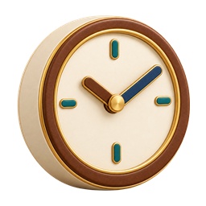
المواعيد وساعات العمل
32 · 24 · 20 px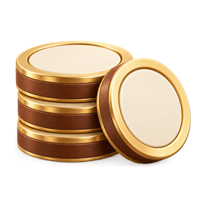
الرسوم والأسعار والدخل
32 · 24 · 20 pxالمواقع الرسمية
32 · 24 · 20 px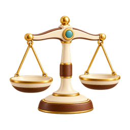
القوانين
32 · 24 · 20 pxالصور
32 · 24 · 20 pxالمترو والمواصلات القريبة
32 · 24 · 20 px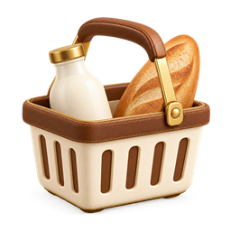
السوبر ماركت والمتاجر
32 · 24 · 20 pxالتخصصات والدراسة
32 · 24 · 20 px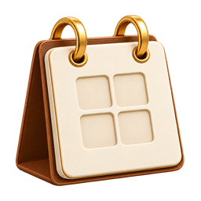
التواريخ والتقديم ومدة العقد
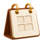
الاستعداد للاختبارات والمقابلات
32 · 24 · 20 pxالمزايا
32 · 24 · 20 pxالإسعاف
32 · 24 · 20 pxالمستشفيات والرعاية الصحية
32 · 24 · 20 pxالرعاية الطبية
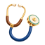
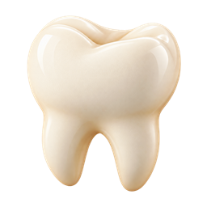
طب الأسنان
32 · 24 · 20 pxالغسيل والمغاسل
32 · 24 · 20 pxالتنظيف
32 · 24 · 20 px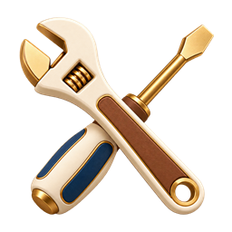
الصيانة والكهرباء والسباكة
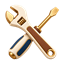
نقل الأثاث
32 · 24 · 20 px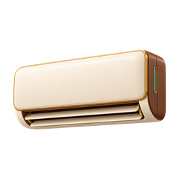
التكييف
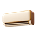
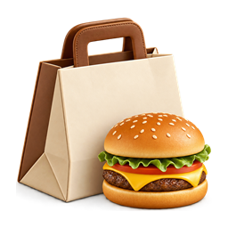
توصيل الطعام
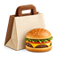
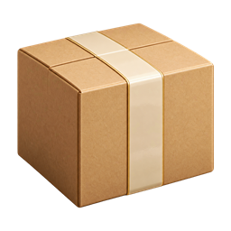
الشحن والطرود
32 · 24 · 20 pxالسينما
32 · 24 · 20 px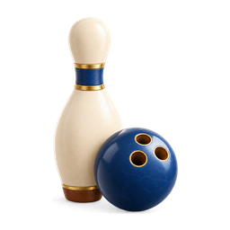
مراكز الترفيه
32 · 24 · 20 px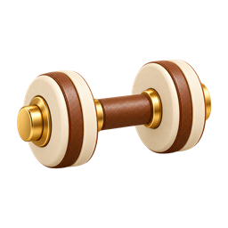
الجيم واللياقة
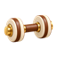
المسرح
32 · 24 · 20 pxالجامعات والمعاهد
32 · 24 · 20 pxالبنوك
32 · 24 · 20 px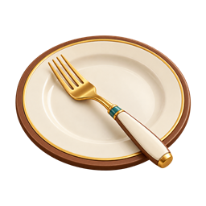
المطاعم
32 · 24 · 20 pxالمقاهي
32 · 24 · 20 px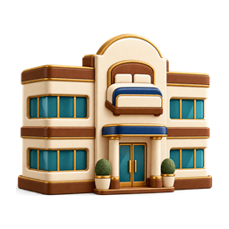
الفنادق
32 · 24 · 20 pxمحطات الوقود
32 · 24 · 20 pxالشرطة وشرطة السياحة
32 · 24 · 20 pxالغوص
32 · 24 · 20 pxالرحلات الصحراوية
32 · 24 · 20 pxالرحلات النيلية
32 · 24 · 20 pxرحلات البالون
32 · 24 · 20 pxالإطفاء
32 · 24 · 20 pxالعناصر المحفوظة
32 · 24 · 20 pxالإحصائيات
32 · 24 · 20 pxالشهر العقاري والتوثيق
32 · 24 · 20 pxتصاريح العمل
32 · 24 · 20 pxالرعاية والطوارئ الليلية
32 · 24 · 20 pxالمجموعة السابقة محفوظة للمرجعية
أيقونات خطية صُمّمت للتطبيق: بترول داكن، ولمسة ذهبية هادئة، وتفاصيل من اللوتس والبردي والنيل.